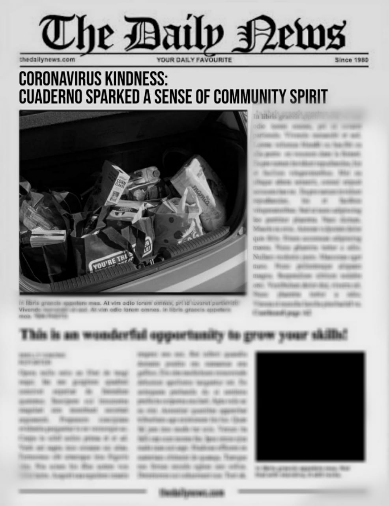
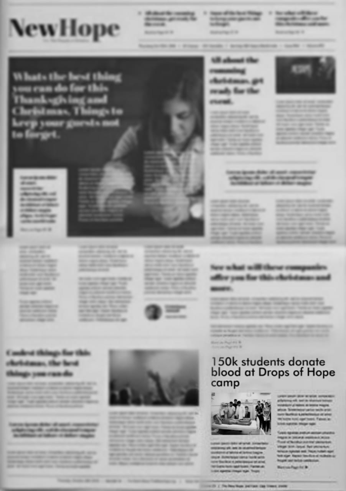
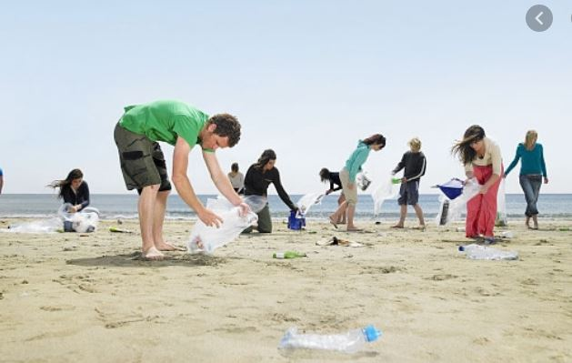

Cuaderno is partnering with grocery stores to help those struggling through the pandemic.
Cuaderno,a famous NGO is transforming into a food bank as a straggering no: of people are u
nemployed or needy extra help as a result of COVID-19.With kids still out of school for the
summer and people out of work due to the pandemic, more and more families are desperately needing
emergency food assistance. Volunteers are also going out the area to pass out food to families living
in town.The Cuaderno food drive is doing what it can to serve those who need it most. Volunteers also
want to make sure more families continue to get what they need to put hot food on their tables.
They're asking the community to help by donating dry goods and non-perishable items.
Drop a Hope

'A single pint can save three lives,a single gesture can create a million smiles'.With faith in this saying,Cauderno,in association with Regional Cancer Centre s
uccessfully organised a blood donation camp at Sasthamangalam on March 22.
In this campaign,the organisers were able to collect around 43 pints of blood which they donated to Medical College.
Before the blood donation programme started,a 'Blood Donation Awareness Campaign' was also organised at the venue.It aimed to raise awareness on the importance of blood donation and its healthy benefits.
Blue Flag

It is necessary to keep our beaches clean if we hope to keep our oceans clean. The sand and
surf is far more than a place to build sand castles and take a dive. Beaches are home to various
creatures from sea lions to sea turtles. Many animals depend on land to survive. Land that is
untainted by chemical wastes or human wastes. Marine life, dwelling only in the water, are also
affected by waste on beaches. When the tides rise, they collect items on the beach and take the
items out when the water lowers, including trash. This can have negative effects on marine life.
Corrine Henn found that trash and plastic pollution affect 100 million marine mammals each year.
Animals do not know that a shiny candy wrapper is not meant to be eaten. It can easily be mistaken
as a fish or piece of kelp. There are ways to prevent this from
happening to our ocean creatures. By keeping this environment trash free we help protect and
preserve marine life.Cuaderno,program to tackle the ocean litter issue – primarily caused by plastic pollution - through education for action, citizen science, and campaigns.
We are all part of the solution and together we can restore our coastlines, one beach at a time.